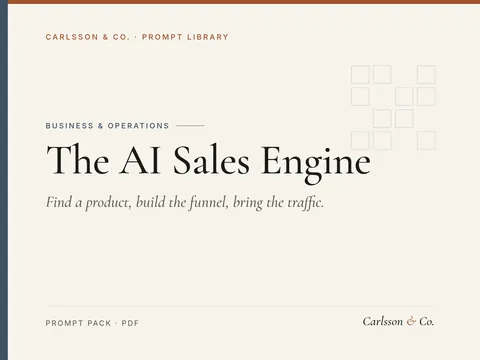
Find a product, build the funnel, bring the traffic.
15 prompts in three stages: finding digital products people already buy, building a sales funnel, and driving traffic to it.
Sample prompt
Score these product ideas [list] 1–10 on demand, ease of creation, price potential, differentiation and my expertise…
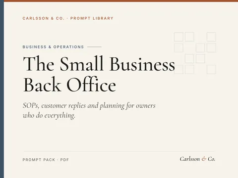
SOPs, customer replies and planning for owners who do everything.
20 prompts for the unglamorous side of running a small business: writing standard operating procedures, customer service replies, hiring, simple planning and supplier emails.
Sample prompt
Write a step-by-step standard operating procedure for [task] at my [business]. Include purpose, who does it, tools…
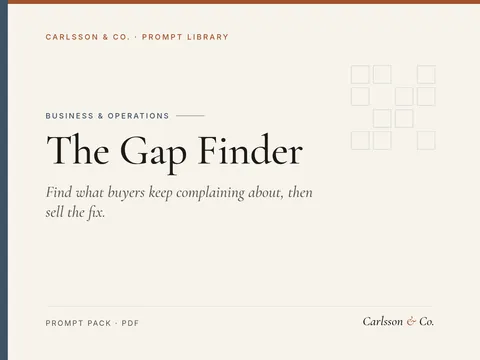
Find what buyers keep complaining about, then sell the fix.
18 prompts in three stages: mining the reviews of a niche's best sellers, hunting for problems that repeat across many products, and building a small, fast product (checklist, template or mini-guide) that solves the gap, with pricing and launch prompts.
Sample prompt
I'm considering these niches: [list]. For each, describe who buys, what they're trying to get done, typical price…
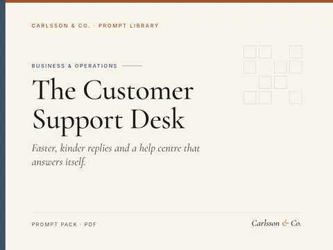
Faster, kinder replies and a help centre that answers itself.
16 prompts for customer support: reply templates, tone adjustment, difficult customers, refunds and delays, help-centre articles, FAQ building, macros and ticket analysis.
Sample prompt
Write a reply to this customer message [paste] based on our policy [policy]. Acknowledge the issue, give a clear…
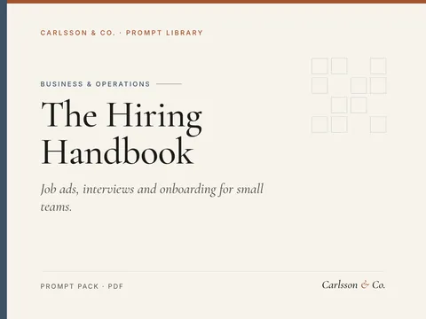
Job ads, interviews and onboarding for small teams.
20 prompts for hiring and HR admin: role definitions, inclusive job ads, screening, structured interviews, scorecards, reference checks, offer and rejection emails, onboarding plans and policy drafts.
Sample prompt
Help me define the role of [title] for [team]: purpose, 4–6 outcomes for the first year, must-have skills and…
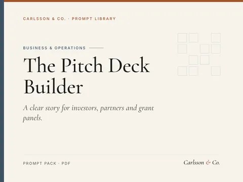
A clear story for investors, partners and grant panels.
20 prompts for startup founders: problem and solution framing, market sizing logic, business model, slide-by-slide deck, one-pager, investor emails, Q&A prep and pitch rehearsal.
Sample prompt
Write 10 one-line descriptions of [startup] in the format '[product] helps [customer] [do something] by…
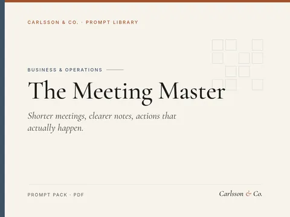
Shorter meetings, clearer notes, actions that actually happen.
15 prompts for meetings: agendas, facilitation, transcript summaries, action lists, decision logs, status updates, async alternatives and recurring meeting reviews.
Sample prompt
Here's what I need: [goal]. Should it be a meeting, an email, a doc or a quick call? Explain and draft the…
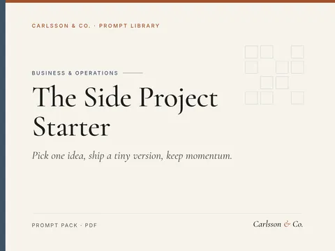
Pick one idea, ship a tiny version, keep momentum.
14 prompts for starting a side project beside a day job: choosing one idea, defining a tiny first version, weekly shipping plans, user feedback, naming, a simple landing page and protecting your energy.
Sample prompt
Here are ideas I have been carrying: [list]. Ask me 5 questions, then help me rank them by excitement, skill fit,…
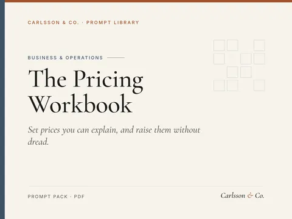
Set prices you can explain, and raise them without dread.
12 prompts for setting and adjusting prices for products and services: working out true costs, understanding value, comparing competitors, building good-better-best tiers, writing a price page, handling discounts and raising prices with clear notice.
Sample prompt
I sell [product or service]. Help me list every cost involved, including my time at [hourly value], materials,…
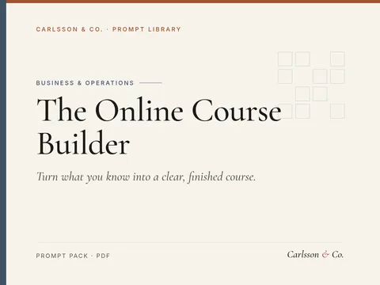
Turn what you know into a clear, finished course.
14 prompts for planning, writing and launching a small online course or paid workshop: choosing and validating a topic with real people, defining the learner and outcome, module and lesson outlines, lesson scripts, exercises and worksheets, short quizzes, recording and slides, welcome emails and onboarding, honest pricing and a simple sales page, a pilot round, feedback and improving after the first cohort.
Sample prompt
I have experience in [your field or skills] and I am often asked about [common questions people ask you]. Help me…
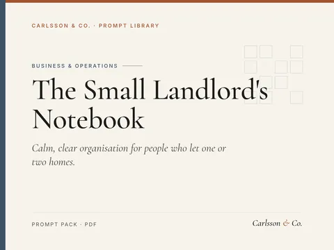
Calm, clear organisation for people who let one or two homes.
13 prompts for private landlords with one or a few rented homes: honest listings, fair viewings, welcome packs, inventories, maintenance and safety calendars, repair and access messages, late-rent conversations, tidy records, renewals, move-outs, deposit letters and a yearly review.
Sample prompt
Write a clear, honest rental listing for my [property type] in [area]. Key details are [rooms, rent, bills…
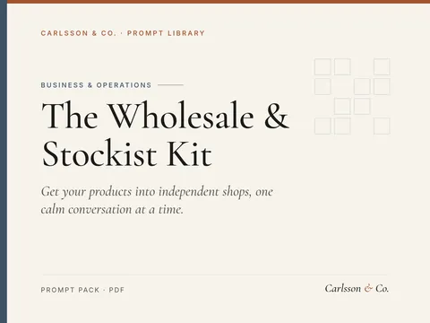
Get your products into independent shops, one calm conversation at a time.
17 prompts for makers and small brands selling to independent shops: deciding whether wholesale suits you, wholesale and retail pricing, minimum orders and terms, line sheets, stockist shortlists, pitch and follow-up emails, trade fairs and shop visits, samples, order forms, packing notes, invoicing and payment reminders, stockist support, reordering nudges and a simple tracker.
Sample prompt
I make [products] and currently sell through [current channels]. I can produce about [quantity] per [week or…